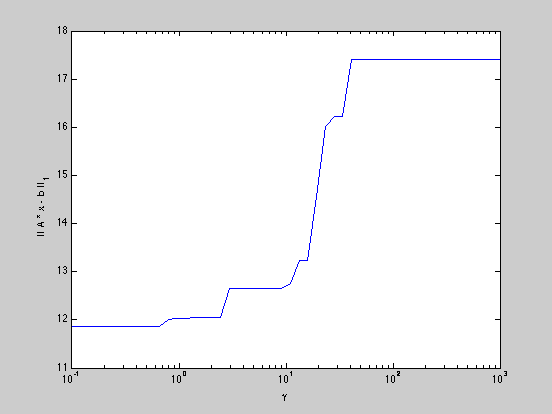

Builds a norm minimization tradeoff curve
echo on n = 10; A = randn(2*n,n); b = randn(2*n,1); gamma = logspace( -1, 3 ); norms = zeros( size( gamma ) ); for k = 1 : length( gamma ), cvx_begin variable x(n) minimize( norm( A * x - b, 1 ) + gamma( k ) * norm( x, Inf ) ) cvx_end norms( k ) = norm( A * x - b, 1 ); end semilogx( gamma, norms ); echo off